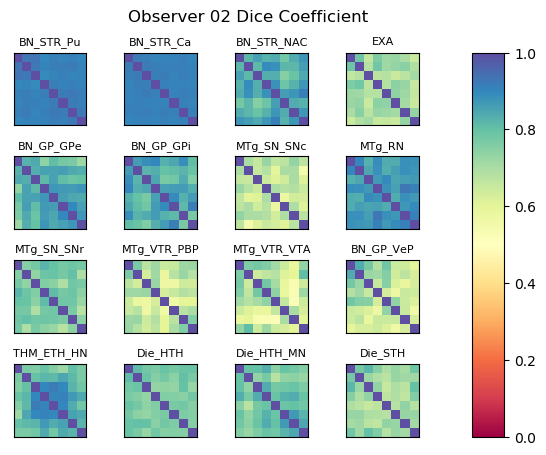
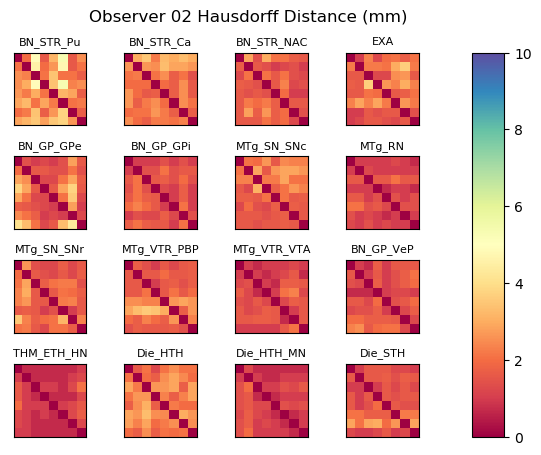

|  |  |
|
Within-observer Dice coefficient and Hausdorff distance matrices for each atlas label. The matrix rows and columns represent the first and second templates in a pairwise comparison. |
| Label Name | Label # | Mean Dice | Mean Hausdorff (mm) | Unfinished Templates |
| BN_STR_Pu | 201 | 0.913 | 2.763 | [] |
| BN_STR_Ca | 202 | 0.911 | 2.418 | [] |
| BN_STR_NAC | 203 | 0.840 | 1.631 | [] |
| EXA | 206 | 0.706 | 2.098 | [] |
| BN_GP_GPe | 207 | 0.831 | 1.807 | [] |
| BN_GP_GPi | 208 | 0.836 | 1.369 | [] |
| MTg_SN_SNc | 209 | 0.659 | 2.189 | [] |
| MTg_RN | 210 | 0.873 | 1.155 | [] |
| MTg_SN_SNr | 211 | 0.765 | 1.699 | [] |
| MTg_VTR_PBP | 212 | 0.664 | 1.768 | [] |
| MTg_VTR_VTA | 213 | 0.663 | 1.248 | [] |
| BN_GP_VeP | 214 | 0.667 | 1.398 | [] |
| THM_ETH_HN | 400 | 0.826 | 0.979 | [] |
| Die_HTH | 410 | 0.768 | 2.267 | [] |
| Die_HTH_MN | 411 | 0.787 | 0.975 | [] |
| Die_STH | 420 | 0.719 | 1.534 | [] |